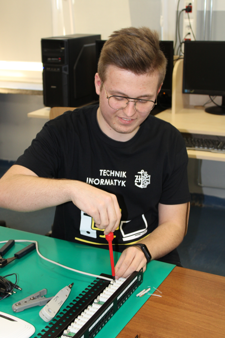
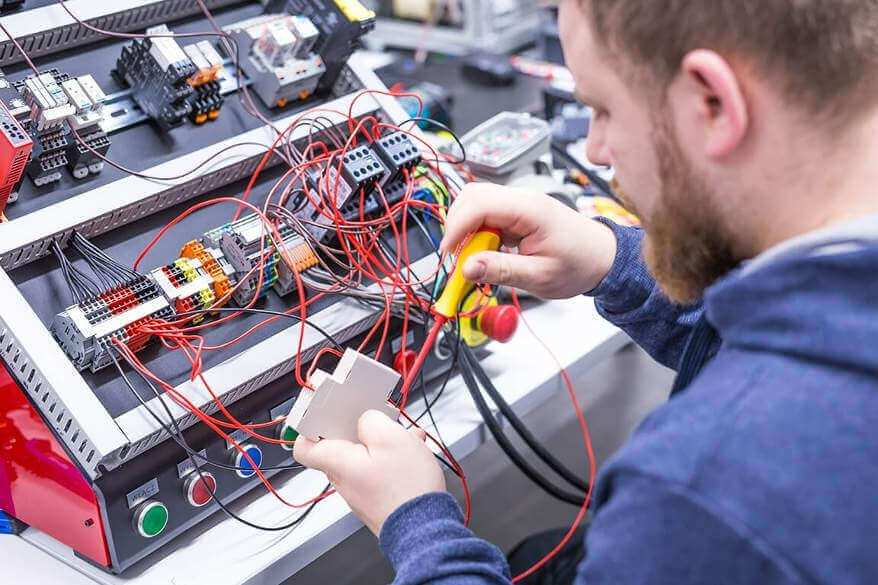

Zespół Szkół Elektronicznych w Radomiu to jedna z młodszych placówek oświatowych na
terenie miasta, istniejąca od 1967 roku. Jej korzeni należy szukać w
zasłużonym dla szkolnictwa Technikum Mechanicznym, które było pierwszą siedzibą placówki. Pierwszym
dyrektorem tych szkół został mgr inż. Tadeusz Ornatowski. Od 1 września 1968 roku Kierownictwo Szkół
Telekomunikacyjnych przejął inż. Tadeusz Gula. Jako zastępca dyrektora Technikum Mechanicznego był
współtwórcą nowej szkoły, swoją działalnością doprowadził do powstania nowoczesnej placówki oświatowej z
bardzo wysokim poziomem nauczania. Rozpoczęto budowę nowego obiektu szkolnego. Wicedyrektorem do spraw
technicznych zostaje mgr inż. Wojciech Madej.
W dniu 24 VI 1976 roku powołano Komitet Organizacyjny uroczystości otwarcia nowego budynku, nadania szkole
imienia oraz wręczenia sztandaru. Głównym celem powstałego komitetu było właściwe przygotowanie największej
i najważniejszej uroczystości, jaka się miała odbyć w dniu 10 października 1976 roku. Od dnia 1 września
1976 roku nastąpiła zmiana nazwy placówki na Zespół Szkół Elektronicznych . Na miejsce wicedyrektora
Andrzeja Pierzchały powołano mgr Krystynę Bielecką. W dniu 10 października 1976 roku nadano szkole imię
„Bohaterów Westerplatte”. Na uroczystość zaproszono przedstawicieli władz wojewódzkich, miejskich,
partyjnych, oświatowych, bohaterów obrońców Westerplatte, rodziców, nauczycieli oraz uczącą się młodzież.
ByłyEgzamin maturalny okolicznościowe przemówienia, nastąpiło wręczenie sztandaru. Specjalnymi gośćmi byli
obrońcy polskiej placówki na Westerplatte w 1939 roku. Przybyło ich na uroczystość kilkunastu. Obejrzeli
Izbę Pamięci Narodowej utworzoną przez nauczyciela historii, pięknie urządzone sale lekcyjne, pracownie i
laboratoria oraz obiekty sportowe. Ogromną zasługę mieli w tym nauczyciele poszczególnych pracowni.
Od 1 09.1979 drugim zastępcą dyrektora został mgr inż. Andrzej Czarnecki – dotychczasowy kierownik
warsztatów szkolnych. Od 1.09.1984 nastąpiła zmiana dyrektora szkoły. Na stanowisko to został powołany dr
inż. Józef Nogaj. Na pierwsze miejsce wysunął problem komputeryzacji szkoły, znacznie wyprzedzając
istniejący wówczas w oświacie stan rzeczy . Z jego inicjatywy powstały kolejne wersje edukacji komputerowej
- od SPECTRUM i MERITUM w pracowni elektroniki, poprzez mikrokomputery BOSMAN w pierwszej pracowni
informatyki, aż do nowocześnie wyposażonego laboratorium.
31 grudnia 1993 roku był tragiczną datą w historii Zespołu Szkół Elektronicznych. Zmarł nagle ceniony przez
młodzież, rodziców, władze i nauczycieli dyr. dr inż. Józef Nogaj. Kierowanie Szkołą na prośbę władz
oświatowych przejęła zastępca dyrektora - mgr inż. Janina Woźniak. Po wygranym konkursie od 1 września 1994
roku pełni funkcję Dyrektora Szkoły. Energicznie zabiega o rozpoczęcie budowy nowych warsztatów szkolnych,
przeznacza posiadane środki na modernizację pracowni i gabinetów przedmiotowych. Jest lubiana i ceniona
przez młodzież i nauczycieli. Nowym zastępcą dyrektora został mgr inż. Tomasz Gębka.
Wycieczka nauczycieli
Przeobrażenia ustrojowe, jakie nastąpiły w Polsce po 1999 roku, wpłynęły na funkcjonowanie naszej Szkoły.
Zapotrzebowanie rynku na nowe kierunki gospodarki wolnorynkowej skłoniły Dyrekcję do utworzenia klas o
nowych specjalnościach kształcenia oraz rozszerzenia bazy szkoleniowej. Jednocześnie w tym okresie Szkoła
została doposażona, powstają kolejne pracownie komputerowe, które mają wpływ na podniesienie standardu
kształcenia młodzieży. Zmieniło się też oblicze Szkoły - zwiększyła się baza szkoleniowa, poprawiła się
estetyka obiektu:
w roku 1999 oddano do użytku budynek warsztatów szkolnych;
w 2002 roku do nowoczesnych, estetycznych i funkcjonalnych pomieszczeń w nowym budynku warsztatów szkolnych
przeniesiono bibliotekę i czytelnię;
adaptowano pomieszczenia w obiekcie warsztatów szkolnych z przeznaczeniem na ośrodek egzaminacyjny nauki
zawodu;
w roku szkolnym 2005/2006 zaadaptowano sale lekcyjne na pracownie internetowe;
Profile w szkole
Mechatronik
Informatyk
Elektronik
Automatyk
Robotyk
Programista
Wybierz kierunek nauczania
Mechatronik
Mechatronika jest dziedziną nauki i techniki, która zajmuje się problemami automatyki, robotyki,
elektroniki, informatyki i mechaniki. Jest to obszar, który w ostatnich latach rozwija się
błyskawicznie, a urządzenia mechatroniczne znajdują zastosowanie w przemyśle maszynowym, lotniczym,
elektronicznym, precyzyjnym, w nowocze4 snych przyrządach medycznych, sprzęcie biurowym, czy AGD.
Czym zajmuje się mechatronik?
Jest to specjalista o wielofunkcyjnych kwalifikacjach zawodowych, który potrafi projektować,
konstruować, programować, obsługiwać, diagnozować i naprawiać nowoczesne urządzenia i linie produkcyjne.
Urządzenia mechatroniczne charakteryzują się wielofunkcyjnością oraz inteligencją programową, dlatego
wymagają systemowego podejścia do ich projektowania, uruchamiania i obsługi.
Mechatronik świetnie odnajduje się zarówno w małych, jak i dużych zakładach przemysłowych, m.in. z
branży automatyki i robotyki, cybernetyki, energetyki, spożywczej, samochodowej, budowniczej, medycznej,
czy ochrony środowiska.
Jaką wiedzę zdobywa mechatronik podczas nauki w technikum?
Nauka w szkole trwa 4 lat, podczas której przyszły mechatronik zdobędzie wiedzę m.in. z zakresu:
montażu i demontażu elementów, podzespołów i zespołów mechanicznych, pneumatycznych, hydraulicznych,
elektrycznych i elektronicznych,
eksploatacji urządzeń i systemów mechatronicznych, w tym:
rozruchu urządzeń i systemów mechatronicznych,
obsługi urządzeń i systemów mechatronicznych,
projektowania i programowania urządzeń i systemów mechatronicznych, w tym:
tworzenia dokumentacji technicznej urządzeń i systemów mechatronicznych,
projektowania urządzeń i systemów mechatronicznych,
programowania urządzeń i systemów mechatronicznych, m.in. sterowników PLC.
Obowiązkowymi językami są język niemiecki i angielski.
Przedmiotami nauczanymi na poziomie rozszerzonym są matematyka i fizyka.
Jakie kwalifikacje uzyskuje mechatronik po ukończeniu technikum?
Uczniowie w trakcie nauki mają możliwość uzyskania 2 kwalifikacji:
ELM.03 Montaż, uruchamianie i konserwacja urządzeń i systemów mechatronincznych
ELM.06 Eksploatacja i programowanie urządzeń i systemów mechatronicznych
Jakie są perspektywy dalszej nauki po ukończeniu technikum?
Uzyskanie tytułu technika mechatronika stanowi solidną podbudowę do rozpoczęcia studiów na
politechnikach, na wielu kierunkach, m.in. na kierunkach: mechatronika, mechanika, elektryka,
elektronika, informatyka, automatyka i robotyka.
Jakie są perspektywy zawodowe mechatronika?
Absolwent szkoły bezpośrednio po ukończeniu nauki w ramach zdobytych kwalifikacji może:
podjąć pracę w zawodzie jako technik dozoru technicznego, technolog produkcji i napraw, technolog i
projektant w zakresie przygotowania dokumentacji technicznej, technik w zakładach naprawy i serwisu
sprzętu mechatronicznego, operator systemów i urządzeń mechatronicznych, operator linii produkcyjnych w
wielu gałęziach przemysłu,
pracować jako specjalista w przemyśle i energetyce, w rolnictwie i leśnictwie, medycynie i protetyce,
żegludze, lotnictwie i nawigacji oraz w wielu innych obszarach praktycznych zastosowań technologii
informatycznych bazujących na podzespołach mechanicznych, elektrycznych i elektronicznych,
prowadzić własną firmę produkcyjną i usługową,
uzupełnić kwalifikacje na kwalifikacyjnym kursie zawodowym,
podjąć studia na uczelniach wyższych.
Sytuacja na rynku pracy potwierdza, że mechatronicy należą do grupy tzw. „ZAWODÓW PRZYSZŁOŚCI”, co
oznacza, że nie powinni mieć problemów z zatrudnieniem.
Jak wygląda współpraca szkoły z firmami, instytucjami i uczelniami wyższymi?
Szkoła współpracuje z wieloma firmami i instytucjami zarówno na rynku lokalnym, jak i ogólnopolskim.
Uczniowie odbywają praktyki w zakładach przemysłowych na terenie Radomia i okolic, do których należą
m.in. DURR, ITM, KOMBUD, RADWAG.
ELEKTRONIK współpracuje także z uczelniami wyższymi, m.in. Uniwersytetem Technologiczno-Humanistycznym w
Radomiu, czy Politechniką Warszawską. Odbywają się wycieczki przedmiotowe na uczelnie, podczas których
uczniowie aktywnie uczestniczą w zajęciach laboratoryjnych oraz wykładach popularnonaukowych,
prezentowanych przez profesorów. Wielu absolwentów po „ELEKTRONIKU” pracuje w tych firmach i
instytucjach.
Jeżeli zainteresowały cię zagadnienia mechatroniczne to NIE CZEKAJ I DOŁĄCZ DO NAS! – do społeczności
„ELEKTRONIKA”!

Informatyk
Informatyka to nowoczesna i dynamicznie rozwijająca się dyscyplina naukowo-techniczna, która zajmuje się
przetwarzaniem informacji za pomocą komputerów. Wykorzystywana jest niemal we wszystkich sferach naszego
życia począwszy od nauki, poprzez przemysł, skończywszy na rozrywce. Zajmuje coraz ważniejsze miejsce
nie tylko w życiu zawodowym, ale i w codziennym każdego człowieka.
Upowszechnienie technologii informatycznych i rozwój Internetu przyczyniły się do powstania zawodu
technik informatyk. Specjaliści w tej dziedzinie są bardzo poszukiwani i wg prognoz na przyszłość nie
grozi im bezrobocie. Celem kształcenia w naszej szkole w zawodzie technik informatyk jest przygotowanie
aktywnego, odpowiednio wykształconego i skutecznie działającego absolwenta, który zdobędzie wiadomości z
dziedziny informatyki oraz umiejętności praktyczne umożliwiające dalszy nieustanny rozwój.
Podejmując naukę w zawodzie technik informatyk uczeń uzyska wiedzę i umiejętności w trzech obszarach
branży informatycznej, tzw. kwalifikacjach, z których każda kończy się egzaminem zawodowym:
INF.02 Administracja i eksploatacja systemów komputerowych, urządzeń peryferyjnych i lokalnych sieci
komputerowych
Po ukończeniu kwalifikacji będziesz umiał:
konfigurować przełączniki lokalnych sieci komputerowych;
określać funkcje komputerowego systemu sieciowego;
wykonywać projekty lokalnych sieci komputerowych;
tworzyć sieci wirtualne za pomocą połączeń internetowych;
rozpoznawać i stosować normy dotyczące okablowania strukturalnego
opisywać i analizować klasy adresów IP;
sporządzać kosztorysy projektowanej sieci komputerowej;
wykonywać pomiary okablowania strukturalnego;
dobierać elementy komputerowej sieci strukturalnej;
montować okablowanie sieciowe;
opracowywać dokumentację powykonawczą lokalnej sieci komputerowej;
konfigurować urządzenia telefonii internetowej;
instalować sieciowe systemy operacyjne;
konfigurować interfejsy sieciowe;
monitorować pracę urządzeń lokalnych sieci;
modernizować i rekonfigurować komputery osobiste;
montować komputer osobisty z podzespołów;
stosować polecenia systemów operacyjnych do zarządzania systemem;
instalować i konfigurować sterowniki urządzeń;
rozpoznawać rodzaje licencji oprogramowania komputerowego, instalować i aktualizować systemy operacyjne
i aplikacje;
konfigurować ustawienia personalne użytkownika w systemie operacyjnym;
stosować oprogramowanie narzędziowe systemu operacyjnego;
sporządzać cenniki i kosztorysy stanowisk komputerowych;
opracowywać dokumentację techniczną stanowiska komputerowego;
stosować oprogramowanie zabezpieczające;
INF.03 Tworzenie i administrowanie stronami i aplikacjami internetowymi oraz bazami danych
Po ukończeniu kwalifikacji będziesz umiał:
tworzyć strony internetowe za pomocą hipertekstowych znaczników;
tworzyć kaskadowe arkusze stylów;
projektować strukturę witryny internetowej;
wykonywać strony internetowe zgodnie z projektami;
stosować reguły walidacji stron internetowych;
projektować i tworzyć relacyjne bazy danych;
wykorzystywać języki programowania do tworzenia aplikacji internetowych realizujących zadania po stronie
serwera;
stosować skrypty wykonywane po stronie klienta przy tworzeniu aplikacji internetowych;
testować tworzoną aplikację i modyfikować jej kod źródłowy.
Technik informatyk jest zawodem dla pasjonatów. Wiedza praktyczna jest tu o wiele ważniejsza niż w
innych dziedzinach. Zajęcia specjalizacyjne mają na celu przygotowanie ucznia od strony praktycznej do
zdobycia poszczególnych kwalifikacji zawodowych. Nasza szkoła organizuje również praktykę zawodową dla
uczniów klas trzecich. Doświadczenie zawodowe uczniowie zdobywają w firmach
i przedsiębiorstwach naszego regionu, zapewniających rzeczywiste warunki pracy właściwe dla zawodu
technik informatyk. Praktyka zawodowa trwa 4 tygodnie i kończy się uzyskaniem zaliczenia w postaci
oceny, którą wlicza się do średniej ocen i uwzględnia wpisem
na świadectwie w trzeciej klasie technikum.
Po pięcioletniej nauce zawodu, nabędziesz konkretnych umiejętności praktycznych nauczysz się:
diagnozować oprogramowanie,
administrować sieciami komputerowymi,
projektować strony internetowe,
tworzyć aplikacje internetowe,
projektować i tworzyć sieci komputerowe,
projektować bazy danych,
instalować oprogramowanie,
korzystać z literatury technicznej
pisać pogramy w różnych językach programowania
dobierać sprzęt do konkretnych sytuacji,
podejmować i rozliczać działalność gospodarczą.
Zawód technik informatyk charakteryzuje się uniwersalnością, tzn. można go wykonywać nie tylko w
wyspecjalizowanych przedsiębiorstwach informatycznych, ale wszędzie tam, gdzie wprowadzana jest
informatyzacja. Na informatyków czeka wiele ciekawych ofert pracy. Niemal każda firma czy instytucja
państwowa zatrudnia informatyków, odpowiedzialnych za prawidłowe działanie sprzętu komputerowego oraz
systemów informatycznych.
Typowe stanowiska pracy proponowane technikom informatykom to:
administrator sieci,
grafik komputerowy,
informatyk wsparcia użytkowników,
konsultant/wdrożeniowiec IT,
pozycjoner stron internetowych,
konsultant help desk,
serwisant sprzętu komputerowego,
tester oprogramowania komputerowego,
webmaster,
programista.
Absolwent technikum w zawodzie technik informatyk może w dalszym ciągu rozwijać swoje pasje i
zainteresowania kontynuując naukę na wyższych studiach informatycznych, a w perspektywie podjąć ciekawą
i satysfakcjonującą pracę.
Idealny kandydat powinien mieć zapał do nauki i kontakt
z nowinkami technicznymi, ponieważ w informatyce wszystko bardzo szybko się zmienia. Jeśli interesują
Cię komputery, programowanie, aplikacje internetowe, tworzenie stron WWW oraz administrowanie sieciami
to jest zawód dla Ciebie! Jeśli interesujesz się techniką, fascynują Ciebie nowe technologie, to
informatyka jest tą dziedziną, którą powinieneś zgłębić.
Jeżeli szukasz szkoły, która pomoże Ci:
poznać tajniki nowoczesnej techniki i technologii;
uczyć się skutecznie;
obrać właściwą ze względu na Twoje predyspozycje ścieżkę kariery zawodowej;
rozwinąć i pogłębić swoje zainteresowania;
nie uronić niczego z uroków młodości;
to znakomicie trafiłeś, ponieważ: tradycja i nowoczesność - najpełniej określają charakter ZESPOŁU SZKÓŁ
ELEKTRONICZNYCH w Radomiu.
Elektronik
Elektronika – dziedzina techniki i nauki zajmującą się wytwarzaniem i przetwarzaniem sygnałów w postaci
prądów i napięć elektrycznych lub pól elektromagnetycznych, obsługą, konstruowaniem i naprawą urządzeń
elektronicznych, przyrządów pomiarowych, aparatury medycznej oraz sprzętu powszechnego użytku (telewizory,
monitory, magnetowidy, radioodbiorniki, telefony komórkowe oraz komputery).
Kierunek kształcenia technik elektronik To dynamiczny kierunek skupiony na nowoczesnych technologiach które
ułatwiają człowiekowi życie. Postęp w dziedzinie elektroniki i technologii elektronicznej wymaga istnienia
specjalistów. My takich przygotowujemy bo elektronika jest wszędzie: telefony komórkowe, laptopy, sprzęt RTV
czy AGD, dlatego technik elektronik nie musi martwić się o pracę.
Przyszłego elektronika powinno cechować logiczne myślenie, pracowitość, ciekawość w odkrywaniu nowej wiedzy,
fascynacja nowymi technologiami, systematyczność i punktualność.
Uczeń kierunku technik elektronik podczas procesu kształcenia zdobędzie wiedzę i umiejętności z zakresu:
projektowania i wykonania instalacji sieci TVSat, TV naziemnej i kablowej,
projektowania i wykonania instalacji lokalnych sieci komputerowych oraz administrowania tymi sieciami,
projektowania i wykonania instalacji systemów automatyki przemysłowej,
urządzeń kontroli dostępu i zabezpieczeń,
projektowania i wykonania systemów monitoringu TV i IPTV,
programowania,
użytkowania i eksploatacji urządzeń elektronicznych,
instalowania oprogramowania specjalistycznego,
serwisu urządzeń elektronicznych.
ABSOLWENT TECHNIKUM ELEKTRONICZNEGO ZDOBĘDZIE NASTĘPUJĄCE KWALIFIKACJE:
ELM.02. Montaż oraz instalowanie układów i urządzeń elektronicznych.
Uczeń, zdobywając tę kwalifikację, będzie potrafił:
Lutować ręcznie metodą przewlekaną i powierzchniową;
Uruchamiać układy i urządzenia elektroniczne;
Lokalizować i usuwać usterki w układach i urządzeniach elektronicznych;
Stosować programy do symulacji działań układów elektronicznych.
ELM.05. Eksploatacja urządzeń elektronicznych
Uczeń, zdobywając tę kwalifikację, będzie potrafił:
Opisywać technologie i systemy transmisji światłowodowej;
Dobierać urządzenia elektroniczne do przewidywanych warunków pracy;
Programować urządzenia elektroniczne;
Wykonywać pomiary parametrów urządzeń elektronicznych oraz ich elementów;
Konserwować i naprawiać instalację oraz urządzenia elektroniczne.
Nauka w technikum trwa 5 lat, kończy się maturą i egzaminem zawodowym, po zdaniu którego uzyskasz bardzo
atrakcyjny zawód technik elektronik. Po ukończeniu kierunku można kontynuować naukę na studiach lub podjąć
pracę we wszystkich firmach związanych z branżą elektroniczną, a tych na rynku jest bardzo wiele, gdyż
obecnie wszystko opiera się na elektronice. Zmieniają się technologie i nie ma już dziedziny przemysłu,
która nie opierałaby się na elektronice. Podstawowe znaczenie ma ona w telekomunikacji, informatyce,
automatyce, astronomii, medycynie…po prostu, wszędzie :) Dlatego też zawód technik elektronik jest zawodem
przyszłości.

Automatyk
Co należy rozumieć pod pojęciem „AUTOMATYKA”?
Automatyka to dziedzina techniki i nauki, która zajmuje się zagadnieniami sterowania różnorodnymi procesami,
głównie technologicznymi i przemysłowymi (zwykle bez udziału lub z ograniczonym udziałem człowieka).
Czym zajmuje się automatyk?
Jest to specjalista o wielofunkcyjnych kwalifikacjach zawodowych. Przedmiotem jego pracy są maszyny, a
dokładnie ich układy sterowania, czyli ukryte mechanizmy, za pomocą których wprawiane są w ruch i
samoczynnie wykonują szereg operacji.
Automatyk zajmuje się projektowaniem, konstruowaniem i tworzeniem dla maszyn odpowiedniego oprogramowania.
Pełni nadzór nad pracującymi urządzeniami oraz robotami przemysłowymi. Jego zadaniem jest również
opiniowanie projektów z zakresu układów automatyki oraz uczestnictwo w ich odbiorze i uruchamianiu.
Miejscem pracy automatyka są biura technologiczne i konstrukcyjne, laboratoria dużych zakładów
przemysłowych, hale produkcyjne, ośrodki badawczo-rozwojowe, instytuty naukowe oraz szkoły wyższe. Jego
podstawowe narzędzie pracy to komputer ze specjalistycznymi programami komputerowymi, dzięki któremu
opracowuje nowe konstrukcje i realizuje pomysły.
Jaką wiedzę zdobywa automatyk podczas nauki w technikum?
Nauka w szkole trwa 5 lat, podczas której przyszły automatyk zdobędzie wiedzę m.in. z zakresu:
elektrotechniki i elektroniki,
pomiarów przemysłowych (wielkości elektrycznych – stanu izolacji, ciągłości obwodów elektrycznych,
rezystancji, natężenia prądu, napięcia, zawartości harmonicznych; wielkości nieelektrycznych – temperatury,
ciśnienia, naprężeń, siły, masy, drgań, poziomu, przepływu, przemieszczenia liniowego i kątowego),
urządzeń i układów automatyki (eksploatacja i diagnostyka czujników, sygnalizatorów, regulatorów, urządzeń
energoelektronicznych, urządzeń pneumatycznych),
sterowników programowalnych (programowanie sterowników Programmable Logic Controller i diagnostyka
instalacji wyposażonych w sterowniki Programmable Logic Controller),
symulacji procesów automatyki (obserwacja i analiza zależności między właściwościami mediów wykorzystywanych
w procesie technologicznym – temperatura, ciśnienie, przepływ, poziom medium).
Nauczanymi językami są język niemiecki i angielski.
Przedmiotami nauczanymi na poziomie rozszerzonym są matematyka i fizyka.
Jakie kwalifikacje uzyskuje automatyk po ukończeniu technikum?
Uczniowie w trakcie nauki mają możliwość uzyskania 2 kwalifikacji:
ELM.01 Montaż, uruchamianie i obsługiwanie ukłądów automatyki przemysłowej
ELM.04 Eksploatacja automatyki przemysłowej
Jakie są perspektywy dalszej nauki po ukończeniu technikum?
Uzyskanie tytułu technika automatyka stanowi solidną podbudowę do rozpoczęcia studiów na politechnikach na
wielu kierunkach, do których m.in. należą: automatyka, automatyka i robotyka, elektronika, elektryka,
mechatronika, informatyka.
Jakie są perspektywy zawodowe automatyka?
Absolwent szkoły kształcącej w zawodzie technik automatyk jest przygotowany do wykonywania następujących
zadań zawodowych:
montażu urządzeń i instalacji automatyki,
uruchamiania urządzeń i instalacji automatyki,
przeglądów technicznych i konserwacji urządzeń i instalacji automatyki,
diagnostyki i remontu urządzeń i instalacji automatyki.
Automatyk może:
pracować jako specjalista w laboratoriach zakładów przemysłowych, w ośrodkach badawczo-rozwojowych, biurach
technologicznych, halach produkcyjnych,
podjąć pracę w zawodzie jako technik dozoru technicznego, technolog produkcji i napraw, technolog i
projektant w zakresie przygotowania dokumentacji technicznej, technik w zakładach naprawy i serwisu sprzętu
elektronicznego,
prowadzić własną firmę produkcyjną i usługową,
uzupełnić kwalifikacje na kwalifikacyjnym kursie zawodowym,
podjąć studia na uczelniach wyższych.
Zaletą zawodu automatyka jest możliwość pięcia się po szczeblach kariery zawodowej. Wymagana jest w tym celu
stała aktualizacja wiedzy z zakresu nowinek technologicznych, gdyż postęp wciąż idzie do przodu.
Obecnie niemal wszystkie gałęzie przemysłu są ściśle zautomatyzowane, co oznacza, że automatyk nie powinien
mieć problemów ze znalezieniem pracy.
Jak wygląda współpraca szkoły z firmami, instytucjami i uczelniami wyższymi?
Szkoła współpracuje z wieloma firmami i instytucjami zarówno na rynku lokalnym, jak i ogólnopolskim.
Uczniowie odbywają praktyki zawodowe w zakładach przemysłowych na terenie Radomia i okolic, do których
należą m.in. DURR, ITM, KOMBUD, RADWAG.
ELEKTRONIK współpracuje także z uczelniami wyższymi, m.in. Uniwersytetem Technologiczno-Humanistycznym w
Radomiu, czy Politechniką Warszawską. Odbywają się wycieczki przedmiotowe na uczelnie, podczas których
uczniowie aktywnie uczestniczą w zajęciach laboratoryjnych oraz wykładach naukowych, prezentowanych przez
profesorów.
Wielu absolwentów po „ELEKTRONIKU” pracuje w wymienionych firmach, instytucjach i uczelniach wyższych.
Robotyk
Robotyka jest interdyscyplinarną dziedziną wiedzy na styku mechaniki, automatyki, elektroniki oraz
informatyki. Domeną robotyki są również rozważania nad sztuczną inteligencją - w niektórych środowiskach
robotyka jest wręcz z nią utożsamiana.
Czym zajmuje się robotyk?
Jest to specjalista o wielofunkcyjnych kwalifikacjach zawodowych. Przedmiotem jego pracy są roboty, a
dokładnie ich układy sterowania, czyli ukryte mechanizmy, za pomocą których wprawiane są w ruch i
samoczynnie wykonują szereg operacji.
Rozwój robotyki wpływa na częstsze i coraz powszechniejsze stosowanie robotów w życiu człowieka, poprawiając
jego jakość.
Miejscem pracy robotyka są biura technologiczne i konstrukcyjne, laboratoria dużych zakładów przemysłowych,
hale produkcyjne, ośrodki badawczo-rozwojowe, instytuty naukowe oraz szkoły wyższe. Jego podstawowe
narzędzie pracy to komputer ze specjalistycznymi programami komputerowymi, dzięki któremu opracowuje nowe
konstrukcje i realizuje pomysły.
Jaką wiedzę zdobywa robotyk podczas nauki w technikum?
Nauka w szkole trwa 5 lat, podczas której przyszły robotyk zdobędzie wiedzę m.in. z zakresu:
automatyki, elektroniki, informatyki i mechatroniki
urządzeń i układów robotyki (eksploatacja i diagnostyka czujników, sygnalizatorów, regulatorów, urządzeń
energoelektronicznych, urządzeń pneumatycznych),
symulacji procesów robotyki (obserwacja i analiza zależności między właściwościami mediów wykorzystywanych w
procesie technologicznym – temperatura, ciśnienie, przepływ, poziom medium).
Nauczanymi językami są język niemiecki i angielski.
Przedmiotem nauczanym na poziomie rozszerzonym jest matematyka.
Jakie kwalifikacje uzyskuje robotyk po ukończeniu technikum?
Technik robotyk [311413] - Uczniowie w trakcie nauki mają możliwość uzyskania 2 kwalifikacji:
ELM.07 - Montaż, uruchamianie i obsługa systemów robotyki
ELM.08 - Eksploatacja i programowanie systemów robotyki
Jakie są perspektywy dalszej nauki po ukończeniu technikum?
Uzyskanie tytułu technika robotyki stanowi solidną podbudowę do rozpoczęcia studiów na politechnikach na
wielu kierunkach, do których m.in. należą: robotyka, automatyka, automatyka i robotyka, elektronika,
elektryka, mechatronika, informatyka.
Jakie są perspektywy zawodowe robotyka?
Absolwent szkoły kształcącej w zawodzie technik robotyki jest przygotowany do wykonywania następujących
zadań zawodowych:
montażu, uruchamiania i obsługi układów mechanicznych i elektronicznych robotów,
diagnostyki i remontu urządzeń i instalacji zrobotyzowanych,
obsługiwania i eksploatacji robotów przemysłowych,
programowania robotów przemysłowych,
organizowania i wykonywania prac związanych z konserwacją i diagnostyką układów robotów przemysłowych,
planowania zadań związanych z produkcją zrobotyzowaną.
Robotyk może:
pracować jako specjalista w laboratoriach zakładów przemysłowych, w ośrodkach badawczo-rozwojowych, biurach
technologicznych, halach produkcyjnych,
podjąć pracę w zawodzie jako technik dozoru technicznego, technolog produkcji i napraw, technolog i
projektant w zakresie przygotowania dokumentacji technicznej, technik w zakładach naprawy i serwisu sprzętu
elektronicznego,
prowadzić własną firmę produkcyjną i usługową,
uzupełnić kwalifikacje na kwalifikacyjnym kursie zawodowym,
podjąć studia na uczelniach wyższych.
Zaletą zawodu robotyka jest możliwość pięcia się po szczeblach kariery zawodowej. Wymagana jest w tym celu
stała aktualizacja wiedzy z zakresu nowinek technologicznych, gdyż postęp wciąż idzie do przodu.
Robotyk nie powinien mieć problemów ze znalezieniem pracy.
Programista
Utworzenie nowego kierunku na poziomie szkoły technicznej jest odpowiedzią na zapotrzebowanie regionalnego
rynku pracy, pracodawców sektora IT oraz instytucji otoczenia biznesu, którzy zgodnie potwierdzają wyraźny
deficyt kandydatów do pracy w zawodzie programisty, wykształconych na poziomie szkoły ponadgimnazjalnej oraz
konieczność wypełnienia wolnych miejsc na rynku pracy właśnie na stanowiskach związanych z programowaniem i
testowaniem oprogramowania.
Programista to jeden z najlepiej zarabiających i najbardziej poszukiwanych na rynku pracy zawodów. Aby nim
zostać, potrzeba kwalifikacji i umiejętności. Technik programista jest znakomitym wyborem drogi życiowej dla
wszystkich, którzy z ciekawością patrzą na komputery, oraz nie przerażają ich przedmioty ścisłe.
Programowanie to nie tylko pieniądze, to ciekawa pasja dająca m. in. możliwość programowania robotów,
pisania gier 3D, aplikacji mobilnych, desktopowych i robienia wielu innowacyjnych, kreatywnych rzeczy
(inteligentne domy itp.)
Absolwenci technikum zdobędą następujące kwalifikacje:
INF.03. Tworzenie i administrowanie stronami internetowymi oraz bazami danych
Uczeń, zdobywając tę kwalifikację, będzie potrafił:
Tworzyć i administrować bazy danych;
Tworzyć strony i aplikacje internetowe.
INF.04. Projektowanie, programowanie i testowanie aplikacji
Uczeń, zdobywając tę kwalifikację, będzie potrafił:
Projektować, programować i testować zaawansowane aplikacje webowe;
Projektować, programować i testować aplikacje desktopowe;
Projektować, programować i testować aplikacje mobilne.
Uczniowie, którzy podejmą naukę na nowym kierunku oferowanym przez Zespół Szkół i Elektronicznych, zdobędą
wiedzę teoretyczną i umiejętności praktyczne z kwalifikacji zawodowych w zakresie projektowania baz danych i
stron internetowych oraz programowania i testowania aplikacji. Będą uczyć się programowania w popularnych
obecnie językach tj. Python, Java, JavaScript, PHP, a także znajomości innych języków tj. SQL (przydatnego
do tworzenia i zarządzania relacyjnymi bazami danych), HTML 5 i CSS (wykorzystywanych do tworzenia stron
internetowych).
Zdobycie wykształcenia na poziomie szkoły technicznej w zawodzie technik programista umożliwi absolwentom
kontynuację nauki na wyższych szkołach politechnicznych lub uniwersytetach, a także pozwoli na rozpoczęcie
własnej drogi zawodowej poprzez podjęcie pracy w zdobytym zawodzie w jednej z firm naszego regionu lub
poprzez samozatrudnienie.